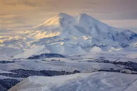
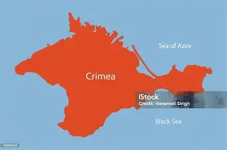

Former Russian President Boris Yelstin
Former Russian President Boris Yelstin
The current President of Russia (officially The Russian Federation) is Vladimir Vladimirovich Putin, who came into power in 1999, and was elected and sworn in as Russia's President in 2000.
Putin became President of Russia at a time when Russia was dealing with serious financial and economic losses, but he has engineered Russia's economy from being a poor country to the 11th largest economy worldwide.
Before him, Boris Yelstin was the Russian President from the early 1990s to 1999,until his sudden resignation in 1999, and appointed Vladimir Putin instead to be acting-President.
Boris Yelstin is widely known to be the first President of Russia right after the Soviet Union or the USSR collapsed in 1991.He served as President till 1999.
Former Russian President Boris Yelstin
After Yelstin, Putin became President from 1999-2012. Born in Leningrad transfromed to President of Russia.
 Russian President Vladimir Putin.
Russian President Vladimir Putin.
Then Dmitry Medvedev became President from 2008-2012. This was due to the constitutional term limits. Putin served as his Prime Minister.
 Former Russian President Dmitry Medvedev.
Former Russian President Dmitry Medvedev.
Much of modern-day Russia's terrain consists of flat land from Europe to the Urals. Russia sits almost directly across the Great Eurasian Steppe, which begins in The Netherlands and ends at the Urals, the natural boundary between Europe and Asia. The plain behaves like a funnel the further east one goes.
This plain has been a disadvantage because invaders attacking from Europe all used it. From Napoleon to Hitler, Russia has found it difficult to defend its western lands compared to the east.
But the plain also has advantages. Due to its funnel-like structure, invaders have found it hard (though not impossible) to escape, because the deeper you go, the wider it gets.
Russia's highest point, Mt. Elbrus, is located near the Caucasus, a junction point of Europe and Asia. The mountain is 5,642 metres above sea level.

Mt. Elbrus is Russia's,and Europe's highest peak at 5,642m.Russia has had tensions with many countries and empires throughout its history. From the Khanates to NATO, Russia has often considered territorial annexations as a way to deter aggression or expansion by rivals.
In 2021, Russia amassed troops along the border with Ukraine, leading analysts to speculate that an invasion was imminent. Russia denied this, claiming the troops were preparing for "drill exercises" in Belarus.
Russia invaded Ukraine on February 24th, 2022, in its so-called "Special Military Operation". In reality, this was a full-scale invasion.
Modern-day Russia has tensions with NATO (due to NATO's eastward expansion), Ukraine (because of the ongoing Russo-Ukraine war), Japan (over the Kuril Islands), and the so-called "Collective West".
The current Russo-Ukraine war, ongoing for over 4 years, is partly about NATO expansion and preventing Ukraine from joining NATO or the EU. It began in 2014 after the Euromaidan revolution that ousted Ukrainian President Viktor Yanukovych. Russia seized control of Crimea and annexed it into the Russian Federation.

The disputed Crimean Peninsula. Claimed by both Ukraine and Russia. Russia though annexed it, along with Sevastopol in 2014. Former Ukrainian President Viktor Yanukovych.
Former Ukrainian President Viktor Yanukovych.